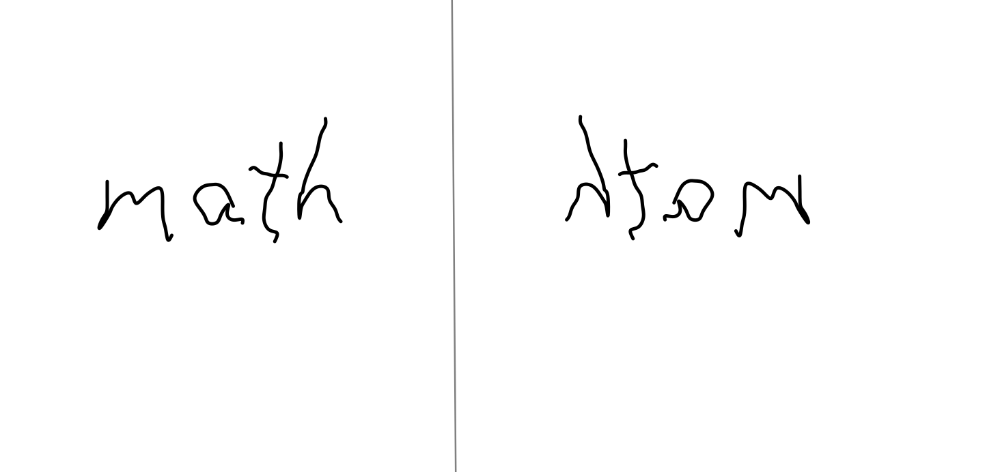
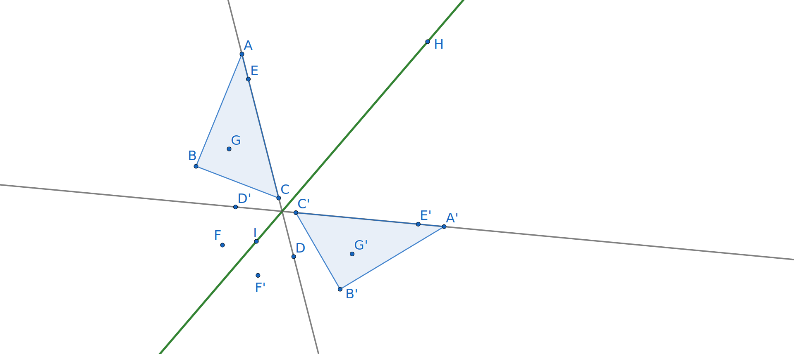

Have you ever held a written message up to a mirror? You probably noticed that the direction of the words were reversed, making them more difficult to read. Even turning your head slightly did not correct this. In this section, we will look more carefully at this property, called orientation-reversing and learn about other transformations that do not reverse orientation of figures. We will also explore isometries and learn about properties that all isometries share.

Subsection4.2.1What do we mean by orientation-maintaining?
The picture in Figure 4.2.1 shows a triangle \(\Delta ABC\) reflected across a line \(\ell\text{.}\) Although the letters \(A\text{,}\)\(B\text{,}\) and \(C\) are in alphabetical order when read clockwise from the original figure, the letters in the reflected image \(\Delta A'B'C'\) are in the reverse order. When this happens, we say that the transformation reverses orientation. Any reflection will be an orientation-reversing transformation.
Figure4.2.1.A reflection reverses orientation
Not all transformations change orientation. In this section, you will encounter two types of orientation-maintaining transformations, namely rotations and translations. When an orientation-maintaining transformation is performed, the order in which the vertices are read is unchanged.
Definition4.2.2.
A geometrical transformation is said to maintain orientation if the order of the vertices of any image when read clockwise are the same as that of the original figure.
On the other hand, if the resulting images have the vertices in the reverse order, we say that the transformation reverses orientation.
Checkpoint4.2.3.
Determine whether orientation is maintained or reversed in each illustrated transformation:
We observed that although reflections reverse orientation, they preserve distance, angle measure, and shape. Any object and its image under a reflection are congruent. In Figure 4.2.4, we see the action of the reflection across line \(\overleftrightarrow{HI}\) not just on triangle \(\Delta ABC\text{,}\) but on other points on the plane. Note how points \(D\) and \(E\) lie on \(\overleftrightarrow{AC}\) and their reflected images \(D'\) and \(E'\) lie on the image \(\overleftrightarrow{AC}\) of \(\overleftrightarrow{AC}\text{.}\) This suggests that this reflection, and in fact any reflection, should preserve linearity of points.

Figure4.2.4.Action of a Reflection
Definition4.2.5.
A transformation that preserves linearity, that takes collinear points to points that also lie on a common line, is called a collineation.
Note4.2.6.
The words collinear and collineation share the same root but describe different mathematical objects. A collinear describes a set of points as lying on a single line. A collineation, on the other hand, is a transformation or mapping that has the property that when three or more points lie on a line their images will be points that lie on a common line. The line containing the images may be a different line or the same line as the one containing the original points.
Exploration 4.2.1 directs our attention to some qualities preserved by a reflection. As you encounter other collineations you are encouraged to check whether these properties continue to hold.
Exploration4.2.1.Properties Preserved by a Reflection.
(a)
In Figure 4.2.4, the reflected image of each illustrated point is identified by adding a ‘prime’ or apostrophe. Give examples that demonstrate each of the following properties preserved by the reflection. In some cases, there may be more than one answer.
(i)
A point in the interior of a polygon maps to a point in the interior of the image of the polygon.
(ii)
A point in the exterior of a polygon maps to a point in the exterior of the image of the polygon.
(iii)
If a point lies between two other points on a line, then its image will also lie between the images of those two points.
(iv)
Points on the right side of the mirror will reflect to a point on the left side of the mirror.
(v)
Distance between points is preserved.
(vi)
Angle measure is preserved.
(vii)
The image of a point maps reflects back to the original point.
(b)
Let \(K\) be the point where lines \(\overleftrightarrow{CD}\) and \(\overleftrightarrow{HI}\) intersect. Where must \(K'\text{,}\) the image of \(K\) be located? Why?
The transformation in Figure 4.0.2 is a collineation, but it does not preserve distance. For the remainder of Chapter 4 we will focus on distance-preserving collineations. Collineations that do not preserve distance will be the focus of Chapter 5.
Definition4.2.7.
A collineation is called an isomorphism if it preserves distance between points. In other words, collineation \(t\) is an isomorphism if for every two points \(P\) and \(Q\text{,}\)\(m(\overline{PQ})=m(\overline{P'Q'})\) where \(P'=t(P)\) and \(Q'=t(Q)\text{.}\)
Reflections are just one example of an isomorphism. We shall see that translations and rotations also preserve linearity and distance.
Subsection4.2.3Translations
The first orientation-maintaining transformation is called a translation or slide.
Definition4.2.8.
A translation is an transformation that slides every point on the plane a fixed distance in a specified direction. The direction and distance are often given in the form of a directed line segment called the translation vector.
Exploration4.2.2.Translating on a Coordinate Plane.
This exploration may also be done on paper using a print copy of Figure 4.2.9 instead of the application. The GeoGebra tool for creating translations has been turned off. Instead, you should use the grid or coordinates to determine the locations of the translated points.
(a)
Figure 4.2.9 gives a picture of quadrilateral \(ABCD\) a vector \(\overrightarrow{EF}\) on a coordinate grid. Vector \(\overrightarrow{EF}\) goes from \((2,4)\) to \((5,3)\) suggesting that this translation moves points three units to the right and one unit down.
Figure4.2.9.An interactive GeoGebra applet for translating by a coordinate vector.
(i)
Use the point tool to locate and mark the image \(A'\) created by moving point \(A\) the distance and direction indicated by vector \(\overrightarrow{FG}\text{.}\) What are the coordinates of \(A'\text{?}\)
(ii)
Create \(B'\text{,}\)\(C'\text{,}\) and \(D'\) in a similar fashion, recording their coordinates. Then use the polygon tool to draw quadrilateral \(A'B'C'D'\text{.}\)
(b)
Does the transformation mapping \(ABCD\) to \(A'B'C'D'\) preserve distance? In other words, is the length of each side of quadrilateral \(A'B'C'D'\) equal to its corresponding side in quadrilateral \(A'B'C'D'\text{?}\)
(c)
Are the corresponding angles of \(ABCD\) and \(A'B'C'D'\) congruent?
(d)
Is the orientation of quadrilateral \(\Delta ABCD\) maintained under the translation? How do you know?
(e)
Sketch the segments \(\overline{AA'}\text{,}\)\(\overline{BB'}\text{,}\)\(\overline{CC'}\text{,}\) and \(\overline{DD'}\text{.}\)
(i)
What do you notice about the lengths of these segments?
(ii)
Now consider what happens if we extend these segments into lines. What appears to be true about the lines \(\overleftrightarrow{AA'}\text{,}\)\(\overleftrightarrow{BB'}\text{,}\)\(\overleftrightarrow{CC'}\text{,}\) and \(\overleftrightarrow{DD'}\text{?}\)
Hint.
Since lines have infinite length, you should be looking for a property other than length.
(f)
Are the quadrilaterals \(ABCD\) and \(A'B'C'D'\) congruent?
(g)
What type of quadrilateral is \(ABB'A'\text{?}\) How do you know? Can the same be said of quadrilaterals \(ADD'A'\text{,}\)\(CDD'C'\text{,}\) and \(BCC'B'\text{?}\)
(h)
An isometry affects all points in the plane, not just those pictured. Draw three new points: point \(H\) lying on side \(\overline{BC}\text{,}\) point \(I\) lying in the exterior of quadrilateral \(ABCD\text{,}\) and point \(J\) lying in the interior of \(ABCD\text{.}\)
(i)
Sketch point \(H'\text{,}\) the image of \(H\) under the transformation that takes \(ABCD\) to \(A'B'C'D'\text{.}\) How is the location of \(H'\) related to \(A'B'C'D'\text{?}\)
(ii)
Sketch point \(I'\text{,}\) the image of \(I\) under the transformation that takes \(ABCD\) to \(A'B'C'D'\text{.}\) How is the location of \(I'\) related to \(A'B'C'D'\text{?}\)
(iii)
Sketch point \(J'\) the image of \(J\) under the transformation that takes \(ABCD\) to \(A'B'C'D'\text{.}\) How is the location of \(J'\) related to \(A'B'C'D'\text{?}\)
(i)
Based on the translation you explored in Figure 4.2.9, describe in your own words how a translation acts on points, line segments, lines, and polygons in the plane. What properties will it have?
Subsubsection4.2.3.1Properties of Translations
In Exploration 4.2.2, we observed many properties of a transformation called a translation. Each translation is uniquely defined by a translation vector 1
A vector is simply a directed line segment between two points.
which indicates the direction and distance that every point is moved by the translation. The choice of vector for a given tranlation is not unique. Any vector of the same length which points in the same direction may serve as the vector for the translation. In Figure 4.2.9, the vector \(\overrightarrow{BB'}\) is a translation vector for the given translation; however, \(\overrightarrow{AA'}\text{,}\)\(\overrightarrow{CC'}\text{,}\)\(\overrightarrow{DD'}\text{,}\) or even your \(\overrightarrow{MM'}\) would describe the same translation. Any of these vectors point down 1 unit and to the right 3 units. You probably noticed that these vectors were parallel and had the same length.
Subsection4.2.4Rotations
The third transformation we will consider is a rotation. Like a translation, a rotation maintains the orientation of the vertices. As the name suggests, a rotation turns the points of a plane around a single fixed point.
Definition4.2.10.
A rotation is a transformation of points on a plane that has a single point, called the center of the rotation, which is not moved by the rotation. All other points are rotated around the center a specific number of degrees. This specified number of degrees is referred to as the angle of rotation.
Note that we also need to specify the direction of the spin. If the direction of a rotation is not specified, we will assume that it spins in the counterclockwise direction. To indicate a clockwise rotation, the angle may be given as a negative number.
Exploration4.2.3.Exploring a Rotation.
Figure 4.2.11 shows an example of the action of a translation on triangle \(\Delta ABC\text{.}\) Use this figure to answer the following:
Figure4.2.11.A rotation of \(\Delta ABC\)
(a)
List the vertices of the original triangle \(\Delta ABC\) clockwise order starting with \(A\text{.}\) List the vertices of the image \(\Delta A'B'C'\) in clockwise order starting with \(A’\text{.}\) Does the rotation maintain the orientation of the triangle?
(b)
What point in Figure 4.2.11 is the center of this particular rotation? Is it on either triangle, in the interior of either triangle, or in the exterior of both triangles? How do you know that the point you identified as the center meets the criteria in the definition of center of rotation? Is the center of rotation related to \(\overline{AA'}\text{,}\)\(\overline{BB'}\text{,}\) and \(\overline{CC'}\text{?}\)
(c)
Is the rotation distance-preserving? How do you know?
Hint.
Here, your argument can be observational and based on this one example. Hopefully, you wonder whether it will always be the case and why this happens!
(d)
In Figure 4.2.11, the following angle measures are given:
What is the degree measure of the rotational angle of this rotation taking \(\Delta ABC\) to \(\Delta A'B'C'\text{?}\) Is it a clockwise or counterclockwise rotation?
Subsubsection4.2.4.1Properties of Rotations
A rotation is specified by two pieces of information, namely its center and the angle of rotation. The center is the one point which does not move. Each point \(P\text{,}\) except for the center, is moved to a new point \(P'\text{.}\) The distance between the center and each point does not change under the rotation. However, the direction from the center to each point is changed as dictated by the rotation angle.
The angle of rotation is given by the angle \(\angle PQP'\) where \(Q\) is the center of the rotation. A positive rotation moves each point \(P\) to its image \(P’\) in the counterclockwise direction. On the other hand, a rotational angle with negative degree measure would move the image clockwise around the center. Rotational angles may be greater than 180 degrees or negative. In fact, any number of degrees is allowed!
Checkpoint4.2.12.Check your understanding.
What is the degree measure of the rotational angle of a clockwise rotation that is identical to a 123-degree counterclockwise rotation? Give two answers, one that is a negative number and other a positive number.